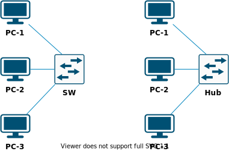
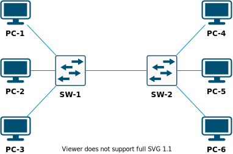

Лабораторная работа №2
Тема
Создание простой сети в NetEmul.
Цель работы
Научиться создавать простую сеть, состоящую из коммутаторов, концентраторов и компьютеров.
Немного теории
Кратко об интерфейсе NetEmul
В данной работе необходимо изучить основы построения сетей. Программа NetEmul позволяет наглядно (при помощи анимации) продемонстрировать работу некоторых процессов в сетях.
Функционал NetEmul небольшой, но достаточный на начальном этапе знакомства с компьютерными сетями.
В дальнейшем для построения и изучения сетей будет использоваться GNS3 или Eve-NG, функционал и возможности которых приближены к реальным сетям.
Ниже приведено описание элементов программы NetEmul.

Рис. Панель элементов и действий в NetEmul
Таблица. Описание элементов NetEmul
| № | Название |
|---|---|
| 1 | Элемент управления |
| 2 | Комментарий |
| 3 | Провод |
| 4 | ПК |
| 5 | Концентратор |
| 6 | Коммутатор |
| 7 | Маршрутизатор |
| 8 | Отправка данных (для тестирования) |
| 9 | Управление анимацией |
| 10 | Настройка выделенного элемента |
| 11 | Просмотр ARP-таблицы |
| 12 | Просмотр передаваемых данных |
Описание сети
Схемы

Рис. Схема для NetEmul

Рис. Схема для GNS3
Адресация
| Адрес сети | Маска сети |
|---|---|
| 10.Год поступления.№ в группе.0 | 255.255.255.0 (/24) |
Год поступления - последние 2 цифры года поступления
Порядок выполнения работы
Часть 1
-
Изучите интерфейс и элементы программы NetEmul.
-
Создайте две схемы (можно в одном проекте). Сначала используйте концентратор, а потом проделайте действия для коммутатора.
-
Назначьте IP-адреса для всех ПК в соответствии с указанной адресацией.
-
Отправьте данные с одного ПК на другой и понаблюдайте за анимацией. Сделайте выводы. Также можно выделить коммутатор или концентратор и включить просмотр передаваемых данных (
элемент №12). Пример передаваемых информации показан на рисунке ниже. Можно получить более подробную информацию, раскрыв интересующую строку.Рис. Пример перехваченного трафика в NetEmul
-
Выделите коммутатор и изучите ARP-таблицу (
элемент №11).
Часть 2
-
Постройте в GNS3 изучаемую схему. Количество VPCS должно быть не менее 1 для каждого коммутатора.
-
Назначьте IP-адреса всем ПК (воспользуйтесь командой
?на VPCS, чтобы посмотреть синтаксис команды) и укажите их на схеме с помощью текстовых элементов (комментариев).Пример назначения IP-адреса на интерфейсе VPCSip 192.168.1.1/24 # (1)-
192.168.1.1- IP-адрес устройства24- длина маски сети (в битах)
-
-
Запустите программу Wireshark на участке сети между коммутаторами.
Воспользуйтесь утилитой
pingдля проверки доступности компьютеров, подключенных к разным коммутаторам (пример приведен ниже).Пример использования утилиты pingping 192.168.1.1 # (1)192.168.1.1- IP-адрес устройства, доступность которого проверяется
Рис. Пример результата использования утилиты ping
Приведите результат программы Wireshark, отфильтровав пакеты по протоколам
ARPиICMP. -
Подключите еще один ПК в имеющейся схеме.
- Назначьте новому ПК уникальный IP-адрес.
- Запустите Wireshark на том же участке сети.
- Выведите результат программы Wireshark, отфильтровав пакеты по протоколу
ARP. - Сделайте выводы.
-
Подключите еще один ПК в имеющейся схеме.
- Назначьте новому ПК IP-адрес, который уже назначен любому другому ПК.
- Запустите Wireshark на том же участке сети.
- Выведите результат программы Wireshark, отфильтровав пакеты по протоколу
ARP. - Сделайте выводы.
Контрольные вопросы
- Зачем нужен протокол ARP?
- Какие данные находятся в ARP-таблице? Как в ней появляются данные?
- Можно ли при захвате трафика между коммутаторами (часть 2) увидеть трафик отправленного эхо-запроса между компьютерами, подключенными к одному коммутатору?
- Что происходит, когда два устройства в одной локальной сети имеют одинаковые IP-адреса?
- Какой протокол используется в утилите
ping?